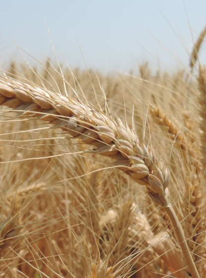
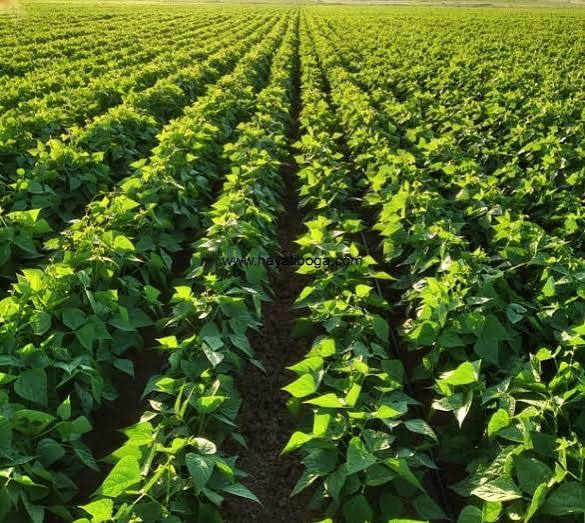

Tarlan için
akıllı bir yol haritası.
Toprağını tanı, sezonu güvenle planla. Konumuna özel iklim ve toprak verilerini ekimden hasada uzanan bir yol haritasına dönüştür.

TARIM ALANI Tarla BitkileriBuğday, arpa, mercimek ve diğer tarla ürünleri için yetiştirme rehberi. Ürünleri keşfet
BAHÇE ÜRETİMİ Bahçe BitkileriBahçe üretimine uygun bitkileri ve yetiştirme bilgilerini incele. Ürünleri keşfetTarlan için doğru plan.
Tarla bilgilerini gir; konumuna özel iklim, toprak ve ürün verilerini birlikte değerlendirelim.
Bilgileri gir
Sezon planın burada
hayat bulacak.
Tarla bilgilerini doldur. Konumuna ait NASA POWER iklim verileriyle sana özel bir plan hazırlayalım.
Parselini haritada izle.
Haritada parselini bul veya çiz; uydu görünümünü ve bitki gelişimini tek ekranda takip et.
Tarlalarını haritada izle
Parsel sınırını haritada işaretle, tarih aralığını seç ve NASA AppEEARS'tan NDVI iste. Son dönem ortalaması parseli renklendirir; ortalama, minimum ve maksimum değerler aşağıda listelenir.
İl, ilçe ve mahalleyi seç; ada ve parsel numaralarını yaz.
NASA/AppEEARS isteği için geçerli bir AppEEARS token'ı gerekir; yaklaşık 48 saatte bir yenilenir. MODIS 250 m piksel çözünürlüğündedir ve küçük parsellerde komşu alanları da etkileyebilir. Parsel çizimleri bu tarayıcıda saklanır.
Tarla ve Bahçe Bitkileri
Önce tarla veya bahçe bitkisi kategorisini seçin; ardından ürünlerin yetiştirme rehberini görüntüleyin.
Tarla Bitkileri
Arpa, buğday, çeltik, fiğ, korunga, mercimek, pamuk, şeker pancarı ve yonca
Bahçe Bitkileri
Fasulye